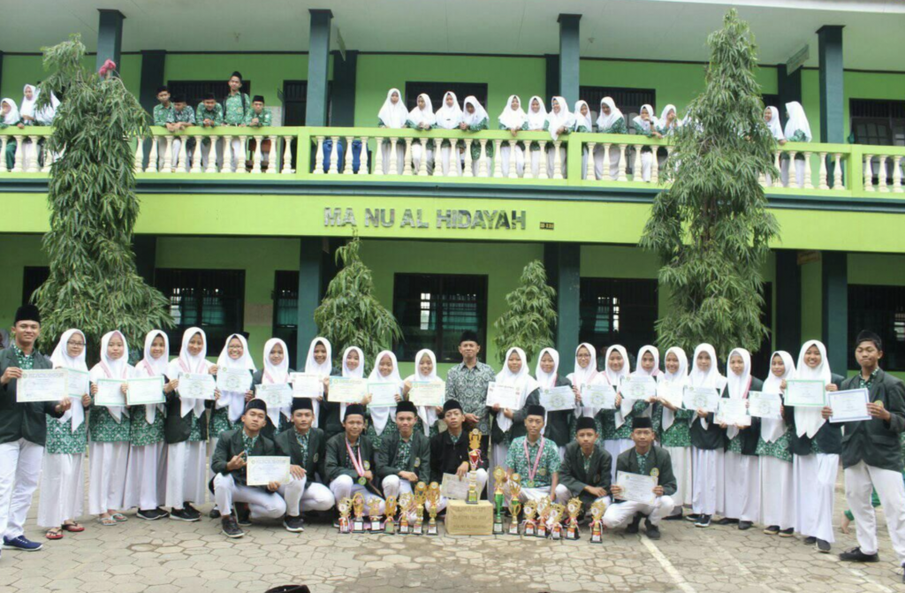

Nama Pesantren



Deskripsi Pesantren
Deskripsi lengkap pesantren akan ditampilkan di sini...
Fasilitas
- Masjid
- Asrama
- Perpustakaan
- Laboratorium
Program Unggulan
Tahfidz Al-Qur'an
Program menghafal Al-Qur'an dengan metode khusus
Bahasa Arab
Pembelajaran bahasa Arab intensif
Pengembangan Diri
Program pembentukan karakter santri